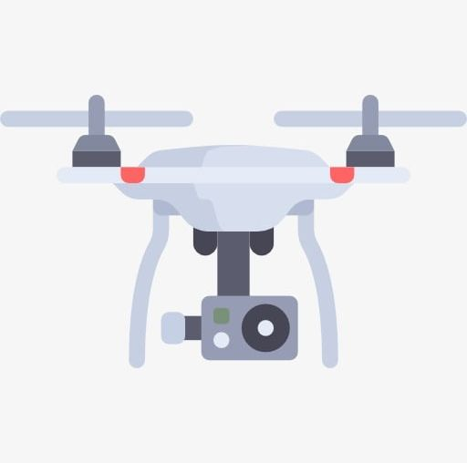

Remote Controlled Drone
To validate this assumption, my team considered many different UAV designs before we settled on creating a Quadcopter. The payload of our Quadcopter design includes a camera and telemetry that will allow us to watch live video from the Quadcopter on a laptop that is located up to 200metres. We have stared the project in terms of getting a grade for my senior design but we will continue to work on the Quadcopter to improve performance and controllability and Range of Live feed.
The internet of things (IoT), is the internetworking of physical devices, vehicles (also referred to as "connected devices" and "smart devices"), buildings and other items—embedded with electronics, software, sensors, actuators, and network connectivity that enable these objects to collect and exchange data. In 2013 the Global Standards Initiative on Internet of Things (IoT-GSI) defined the IoT as "the infrastructure of the information society." The IoT allows objects to be sensed and/or controlled remotely across existing network infrastructure, creating opportunities for more direct integration of the physical world into computer-based systems, and resulting in improved efficiency, accuracy and economic benefit. When IoT is augmented with sensors and actuators, the technology becomes an instance of the more general class of cyber-physical systems, which also encompasses technologies such as smart grids, smart homes, intelligent transportation and smart cities. Each thing is uniquely identifiable through its embedded computing system but is able to interoperate within the existing Internet infrastructure.
The proposal here is to build a Bluetooth controlled drone using multiway firmware where you can code the flight pattern and the movements of the drone in every manner you wish to. This would in turn make it less expensive and the aerodynamic structure of the drone is built using 3-layer silicon coated fiber boards that makes it light weight and much more endurable. The motors and the propellers used in the construction are 11650kv motors and aero matrix propellers that give the drone high performance speed and stability. The main fact to be considered here is the size of the drone the drone is being built in a very miniature way as to glide through all kinds of passages and is mounted with a FPV Camera as to help guide in visual and geo-mapping.